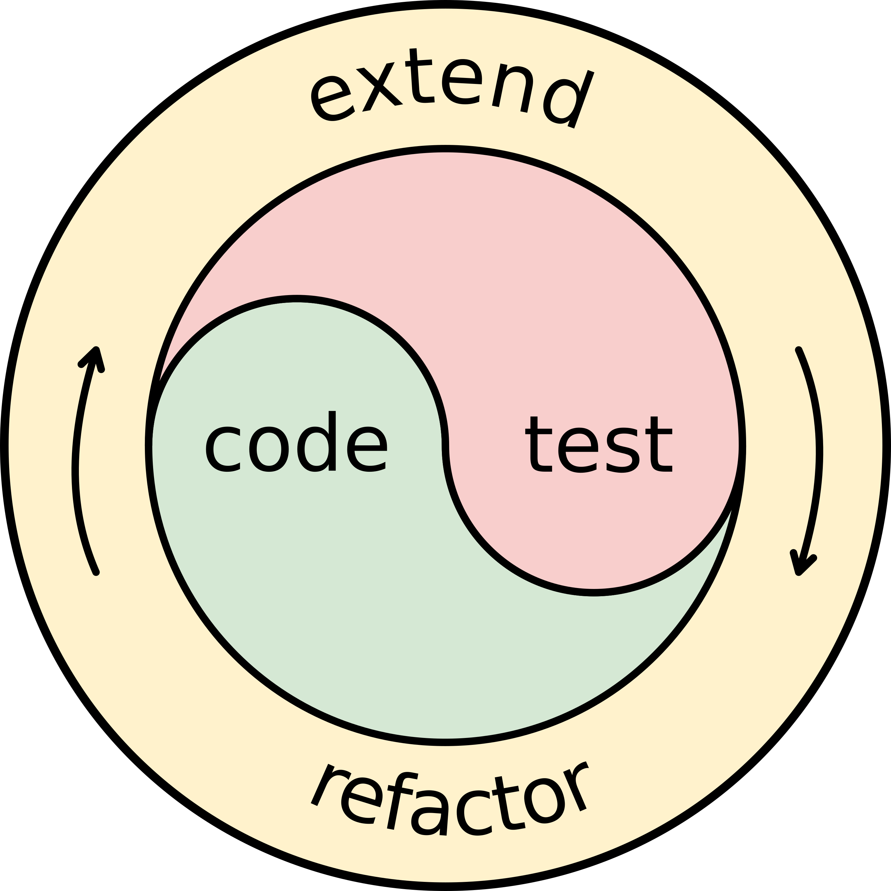

Programación
La programación ha sido muy importante para la evolución de la tecnología como la llegada a la luna
Importancia del diseño
Nos permite hacer las cosas mas atractivas y más usables para todas las personas
Información importante
Fundamentos del diseño a tomar en cuenta
Está en inglés pero creo que no importa
Otro tipo de Heuristicas

- Visibilidad
- Retroalimentación
- Restricciones
- Consistencia
- Affordance

- Buscar objetivos
- Analizar programas
- Diseñar el algoritmo
- Codificacion